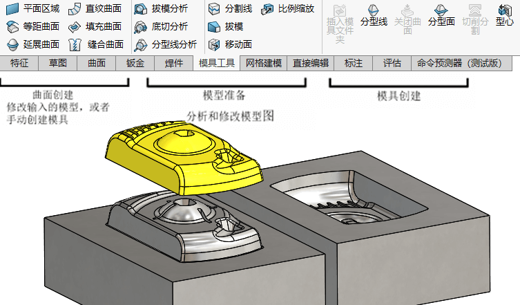

教程-SOLIDWORKS 模具
提供一种模具设计的工具，其结果是输出一份“产品+模仁”的多实体零件。本文章模型已做拔模、缩放处理。
1曲面概念
1.1 概述
1.2 隐藏/显示树项目
1.3 获取命令
1.4 输入数据
1.5 模型的类型
1.5.1 线框模型
1.5.2 曲面模型
1.5.3 实体模型
1.6 定义
1.6.1 几何信息与拓扑信息
1.6.2 实体
1.6.3 欧拉方程
1.7 实例练习：实体对曲面
1.7.1 拉伸曲面
1.7.2 平面区域
1.7.3 剪裁曲面
1.7.4 解除剪裁曲面
1.7.5 缝合曲面
1.7.6 缝隙控制
1.7.7 曲面生成实体
1.7.8 实体分解成曲面
1.7.9 删除面
1.7.10 边线
1.7.11 曲面类型
1.8 术语
1.8.1 CAD文件
1.8.2 建模内核
1.9 文件转换方法
1.9.1 直接转换
1.9.2 中性转换
1.9.3 支持的中性转换器
1.10 建模系统
1.10.1 边界表示法
1.10.2 体素构造表示法
1.10.3 混合法
1.11 文件转换过程
1.12 输入数据出错的原因
1.12.1 引发的问题
1.12.2 输入诊断
1.13 诊断和修复
1.14 实例练习：修补与编辑输入的几何体
1.14.1 处理流程
1.14.2 FeatureWorks®
1.15 检查实体
1.15.1 输入诊断
1.15.2 面修复工具
1.15.3 缝隙修复工具
1.15.4 自动修复工具
1.15.5 删除面的选项
1.15.6 补洞
1.15.7 补洞策略
1.15.8 一致性通知
1.15.9 其他方案
1.16 面的复制
1.16.1 延伸曲面
1.16.2 编辑输入的零件
1.16.3 删除孔
1.17 实例练习：输入诊断
1.18 修复缝隙
练习1-1 输入诊断
练习1-2 使用输入的曲面与替换面
2型心和型腔
分析模型
模型诊断
拔模的概念
补充：拔模方式说明：
中性面 如果一个平面或者面既可以表示拔模方向， 也可以表示拔模角应用的位置， 就可以使 用 【中性面】。 这个拔模类型仅能在DraftXpert模式中创建
分型线 当拔模需要应用在非平面边时， 就可以选择分型线边来定义拔模角度从哪里开始
阶梯拔模 这种拔模类型允许选择在分型线上创建阶梯面。 对Stand⁃off 特征拔模 对Stand⁃off 特征采用中性面拔模类型， 且应用在特征的顶面， 并且保留特 征尺寸， 向外拔模。 也可使用DraftXpert来协助选择要求拔模的特征面。

缩水率
缩水率：是指注塑模具中，成品因材料特性产生收缩。因此模具模仁会将产品【缩放比例】增大处理
分型线
选择分型面用于生成分型线。

关闭曲面
对于一些有开口贯穿的产品，我们需要进行封闭处理才能进行模仁分割。

分型面
生成用于分割模仁的分割面

切削分割
利用“草图”轮廓生成上下模仁（草图轮廓需要在分型面范围内，才可进行上下模的分割操作）。

选择草图后，会进入模仁分割设置窗口，你会需要设置上下模高度。

3型芯
有些成型区域 要求取出方向和塑料零件从模具中取出的方向不同， 这就需要侧型心和斜顶杆等模具工具。
分析模型
厚度分析
检查底切
包围的模具区域
侧型心

斜顶杆

镶件
户也可以用型心命令来把【型心销】模具区域从 模体中分开， 型心销用于形成塑料零件的细节区域。 这 些模具区域可能比模具的其他区域磨损得更快， 创建了 含有型心销的模具区域， 可以通过更换型心销很容易地 被修复， 而不必为了某些区域的损坏而更换整副模具

4手动分型线
使用【曲线-分割】面，形成线段

5手动分型面
为模具设计创建定制曲面
手动创建连锁曲面


直纹曲面
选择部分环

放样曲面

延伸曲面

剪裁曲面


分型面
至此，我们是获得了自定义的分型面实体，和模具型腔/型芯曲面组成完整封闭的曲面。这可用于后续的【模具-切削分割】使用。
注意：当要求定制曲面时， 它们需要正确地放置到模具文件夹中， 这样才能被切削分割识别。

管理曲面
5.3 实例分析：路由器底部
手工分型面
手工关闭曲面
复制曲面
6模具设计的高级曲面建模
6.1 模具设计的曲面建模
6.2 实例练习：搅拌器后壳体
6.2.1 手工分型面
6.2.2 模具分割文件夹
6.2.3 总结
6.3 实例练习：搅拌器把手
6.3.1 手动关闭曲面
6.3.2 不填充的关闭曲面
6.3.3 手动创建侧型心
6.3.4 总结
练习6-1 搅拌器开关
练习6-2 风扇底座
第7章 改变方法进行模具设计
7.1 模具设计的替代方法
7.2 实例练习：利用组合和分割
7.3 创建型腔
7.4 实例练习：型腔
7.5 实例练习：使用曲面
7.6 使用成型到一面的方法
7.7 使用分割方法
练习7-1 手柄
练习7-2 过滤器
第8章 数据重用
8.1 数据重用
8.1.1 库特征
8.1.2 智能零部件
8.1.3 3DContentCentral®
8.2 任务窗格
8.3 SOLIDWORKS资源
8.4 设计库
8.4.1 设计库的本质
8.4.2 文件夹显示
8.4.3 主要的目录结构
8.5 文件探索器
8.6 实例练习：3DContentCentral
8.7 库特征
8.8 实例练习：创建库特征
8.8.1 库特征的特性
8.8.2 管理库特征零件的尺寸
8.8.3 替换尺寸
8.8.4 重命名尺寸
8.8.5 尺寸分类
8.9 库特征配置
8.10 实例练习：水管
8.11 创建智能零部件
8.11.1 创建定义装配体
8.11.2 制作智能零部件
8.11.3 插入智能零部件
8.11.4 插入智能特征
练习8-1 智能零部件
练习8-2 模具插入项目
第9章 完成模架
9.1 实例练习：模架
9.2 管理装配体
9.3 修改斜顶杆
9.4 斜顶杆运动
9.5 顶杆
9.6 模具冷却系统
9.7 生成工程图
9.8 模型更改
9.9 完成整个过程